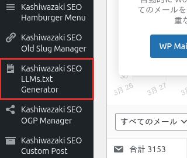

インストール・初期設定
Kashiwazaki SEO LLMs.txt Generator のインストール方法と、llms.txt生成に必要な基本設定を説明します。
インストール手順
WordPress管理画面から プラグイン > 新規追加 に移動し、「Kashiwazaki SEO LLMs.txt Generator」を検索します。または、プラグインのZIPファイルを プラグイン > 新規追加 > プラグインのアップロード からアップロードします。
「今すぐインストール」をクリックし、インストール完了後「有効化」をクリックします。
管理画面の左メニューに「Kashiwazaki SEO LLMs.txt Generator」が追加されます。クリックして設定画面を開きます。

有効化時にリライトルールが自動登録され、/llms.txt と /llms-full.txt のエンドポイントが利用可能になります。
リライトルールの確認
プラグインの有効化後、以下のURLでllms.txtが正しく出力されることを確認してください。
| エンドポイント | 説明 |
|---|---|
/llms.txt |
概要版のllms.txt。サイトの基本情報と主要コンテンツの概要を出力します。 |
/llms-full.txt |
詳細版のllms-full.txt。全コンテンツの詳細情報を含むフル版を出力します。 |
エンドポイントにアクセスして404エラーが表示される場合は、WordPress管理画面の 設定 > パーマリンク を開いて「変更を保存」をクリックしてください。リライトルールが再生成されます。
基本設定
サイト情報
llms.txtに出力されるサイトの基本情報を設定します。サイト名と説明は、AIクローラーがサイトの目的を理解するための重要な情報です。
投稿タイプの選択
llms.txtに含める投稿タイプを選択します。デフォルトでは投稿（post）と固定ページ（page）が含まれます。カスタム投稿タイプがある場合は、必要に応じて追加できます。
| 投稿タイプ | 説明 |
|---|---|
| 投稿（post） | ブログ記事やニュース記事。デフォルトで含有されます。 |
| 固定ページ（page） | 固定的なコンテンツページ。デフォルトで含有されます。 |
| カスタム投稿タイプ | テーマやプラグインで登録されたカスタム投稿タイプ。個別に含有・除外を設定可能。 |
link rel="alternate" メタタグ
本プラグインは、HTMLの <head> 内に以下のような <link rel="alternate"> メタタグを自動出力します。
<link rel="alternate" type="text/plain" href="https://example.com/llms.txt">
<link rel="alternate" type="text/plain" href="https://example.com/llms-full.txt">このメタタグにより、検索エンジンやAIクローラーがllms.txtの存在を自動的に検出できます。
メタタグの出力には、テーマの header.php に <?php wp_head(); ?> が記述されている必要があります。